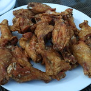

Chicken Wings
Home

Description
This recipe is for making chicken wings in the air fryer.
Ingredients
- frozen chicken wings
- olive oil
- salt
- garlic powder
- cornstarch
- flour
- honey barbecue sauce
Steps
- Take 10 or 11 pieces of chicken wings (still frozen) and put them in a bowl. Toss in some olive oil, then put on some salt and garlic powder. Then some cornstarch and flour.
- Preheat the air fryer to 400 degrees, then put in the chicken for 30 minutes, flipping once.
- When it's done, toss it in some honey barbecue sauce.